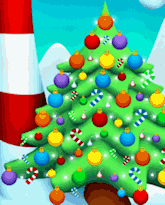
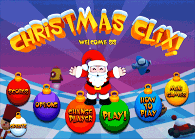

5 |
Getting Started |
 |
 Christmas doesn't have to be all work for Santa does it? Santa's having some fun and wants you to play along too!
While Santa magically stacks the Christmas presents, it's your job to remove the presents and decorate the Christmas tree.
Getting Started: To make a selection, move the pointer over an ornament and press the A Button.  Change Player: Will allow you to create a new player or give someone else a try.
Play: Select "play" to get started helping Santa or continue from your last location.
Scores: Press "score" to see who currently has the highest points and level. Santa knows who the best is.
Options: The options allow you to change the volume of the music and sound effects.
How to Play: Graphically teaches you how to play Christmas Clix. Sometimes a picture tells a story.
Mini Games: Here you can replay any Mini Game that you've previously unlocked. Can you beat your last score?
Credits: Learn about everyone that had fun helping Santa create Christmas Clix just for you.
|
 |
 |
 |